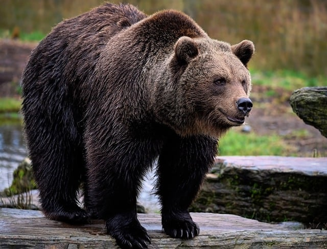

Bears
Bears are found on the continents of North America, South America, and Eurasia. Common characteristics of modern bears include large bodies with stocky legs, long snouts, small rounded ears, shaggy hair, plantigrade paws with five nonretractile claws, and short tails.
- Ollie
- Mona